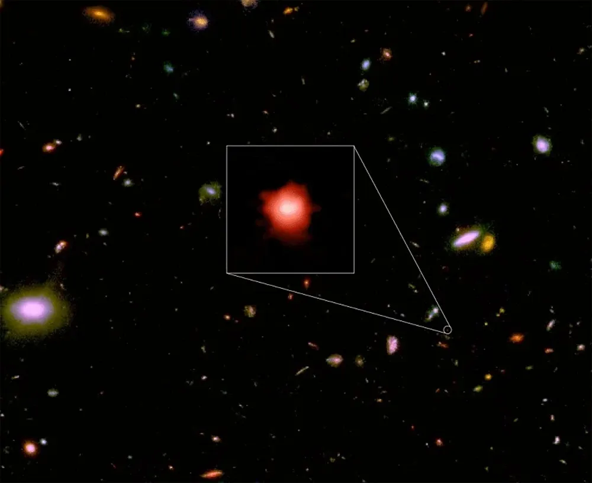

High-redshift Galaxies

Project Information
- Status: Ongoing
- Duration: 2024 - Present
- Role: Researcher
- Institution: University of Rome "Tor Vergata"
Links
Overview
This research focuses on studying the morphologies and physical properties of high-redshift lensed galaxies, providing insights into galaxy formation and evolution in the early Universe.
Scientific Goals
High-redshift galaxies offer a unique window into the early Universe, allowing us to observe galaxy formation processes that occurred billions of years ago. Gravitational lensing magnifies these distant objects, enabling detailed studies that would otherwise be impossible.
Research Focus
- Morphological classification of lensed high-redshift galaxies
- Analysis of physical properties (mass, star formation rate, metallicity)
- Understanding galaxy evolution across cosmic time
- Leveraging gravitational lensing for enhanced observations
Methodology
- Multi-wavelength imaging analysis
- Spectroscopic studies for redshift determination
- Gravitational lens modeling
- Statistical analysis of galaxy populations
Tools & Technologies
Python
AstroPy
Source Extractor
DS9
Photutils
SciPy
Significance
Understanding high-redshift galaxies is crucial for testing theories of galaxy formation and evolution. These observations help constrain cosmological models and provide insights into the physical processes that shaped the Universe we see today.